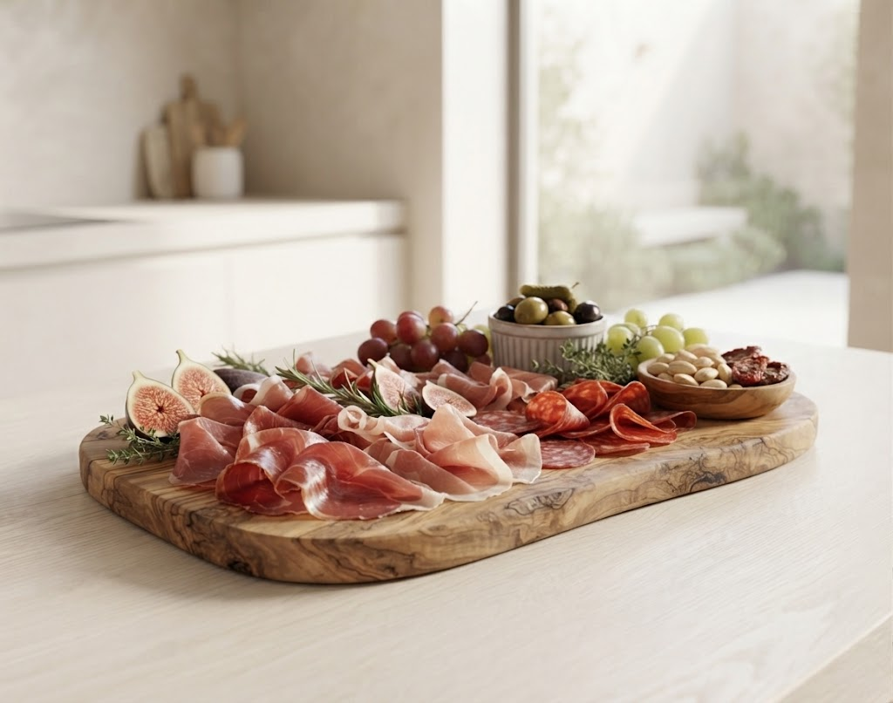
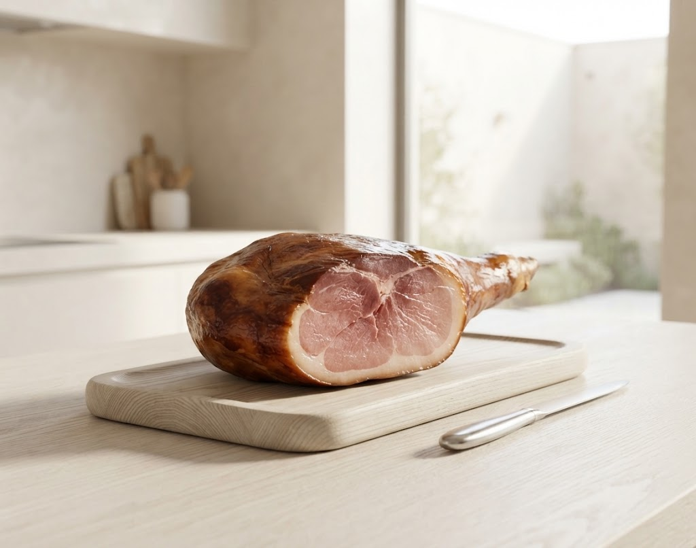

SCROLL
壁一面のショーケースに並ぶ、20種類以上の自家熟成ハム。 オーダーが入ってから一枚ずつ丁寧にスライスされるハムは、 口に含んだ瞬間に脂が溶け、芳醇な熟成香が鼻を抜けます。
「これまでの生ハムの概念が覆されました」

トスカーナ、パルマなどミシュラン星付き店を含む10軒で研鑽。大衆食堂から高級店まで、本場の真髄を吸収しました。
パルマでの生ハム加工に魅せられ、帰国後も研究を重ねて確立した独自の製法。山形の気候が最高の熟成を叶えます。
「地元の食材で、本場を超える」を掲げ開業。今や「生ハムの聖地」として全国からファンが訪れる名店となりました。
20種類以上の圧倒的生ハム盛り合わせ
自家熟成バーニャカウダ・季節の野菜
手打ちパスタ・本格イタリアンデザート
【お客様への約束】
食べきれなかったハムは、専用パックで無料お持ち帰り。翌朝まで「イル・コテキーノ」の感動が続きます。
予約必須の名店
「お店のあの味をご自宅でも」「遠方の家族や大切な人に贈りたい」というお客様の声にお応えし、現在新しい取り組みを進行しております。
「一度食べたら病みつきになる」と絶賛される自家製バーニャカウダソース。ご家庭で温めるだけでお店の味をそのまま再現。
全国の肉好き・生ハムファンへ。佐竹シェフ自慢の自家熟成ハム・サラミを切り立て真空パックでお届け。贈答用に最適です。
リリース情報やお知らせは公式Instagramにて発信いたします。
※大変混み合いますので、お早めのご予約をお勧めいたします。